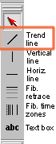
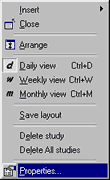
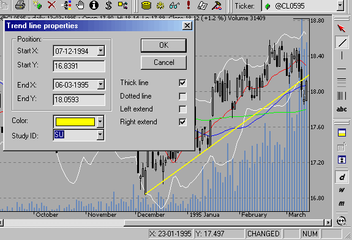

AmiBroker 3.52 introduces the ability to reference hand-drawn studies from AFL formulas. This feature is quite unique among trading software, and as you will find out, using this feature is quite easy.
I will show you an example of how to check if a trend line is broken from AFL code. All we need to do is follow three simple steps:
Drawing a trend line
|
A trend line is a sloping line drawn between two prominent points on a chart. In this example, we will draw a rising trend line that defines the uptrend. This kind of trend line is usually drawn between two (or more) troughs (low points) to illustrate price support. Surely you know how to draw a trend line in AmiBroker - just select the "Trend line" tool from the "Draw" toolbar, find at least two recent troughs, and draw the line. |
 |
Defining a Study ID
|
As you probably know, you can modify the properties of each line drawn in AmiBroker by right-clicking on the study and selecting "Properties" from the menu. The properties dialog that appears allows you to define exact start/end points and choose line color, style, and left and/or right extension mode. For further analysis, we will use the right-extended trend line (click on the appropriate checkbox) to make sure that the trend line is automatically extended when new data is added. |
 |
Since version 3.52, the properties dialog also allows you to define "Study ID" (the combo box below the color box). "Study ID" is a two-letter code for the study that can be assigned to any study within a chart, allowing AmiBroker to reference it from AFL. Predefined identifiers are: "UP" - uptrend; "DN" - downtrend; "SU" - support; "RE" - resistance; "ST" - stop loss. However, you can use ANY identifiers (there are no limitations, except that AmiBroker accepts only 2-letter codes). This way, if you draw support lines in many symbols and give them all the "SU" identifier, you will then be able to reference the support line from AFL code.

So we will assign the "SU" study ID to the rising support trend line we have just drawn.
Writing the formula that checks for a trend line break
In this example, we will detect if the closing price drops BELOW the support trend line. This is actually very simple:
Sell = Cross( Study( "SU", GetChartID() ), Close );
Note that the study() function accepts two arguments: the first is the Study ID two-letter code that corresponds to the one given in the properties dialog; the second argument is the chart ID. It should be taken either via the GetChartID() function (then it refers to the current indicator) or read from Parameter dialog, Axes & Grid: Miscellaneous: Chart ID.